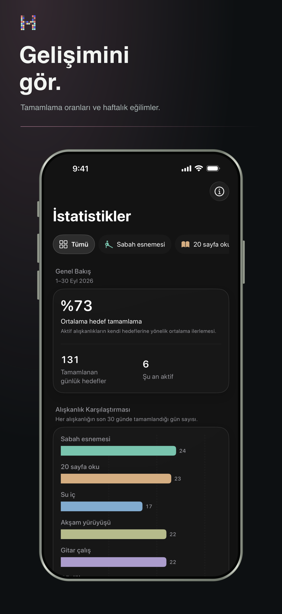

Baskı değil, örüntüler
Geri dönmenizi neyin sağladığını anlayın.
Rutininizi tabloya çevirmeden serileri, tamamlanma oranlarını ve uzun vadeli örüntüleri görün.
- Mevcut ve en iyi seriler
- Tamamlanma eğilimleri ve dağılım
- Haftalık, aylık ve yıllık bağlam